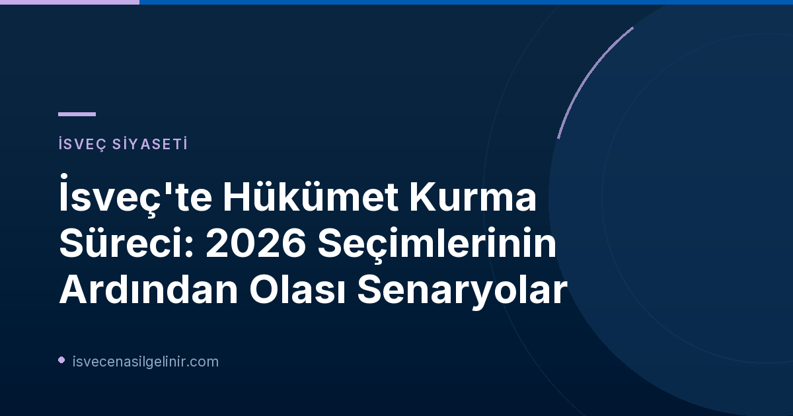

İsveç'te 2026 Seçimleri Sonrası Hükümet Kurma Süreci Gerilimi
İsveç'te Pazar günü yapılan genel seçimler (Val 2026) ülkeyi yeni bir siyasi dönemeçle karşı karşıya getirdi. Seçim sonuçlarının açıklanmasının ardından partiler, önümüzdeki dönemin hükümetini kurmak için yoğun bir pazarlık sürecine girdi. SVT Nyheter Inrikes tarafından bugün (10 Eylül 2026) yayınlanan duyuruya göre, liderler koltuklarını belirlemek için kritik görüşmeler yapıyor. Oy verme merkezlerinin kapanmasına sadece 78 saatten az bir süre kala, partilerin alacağı pozisyonlar ve olası iş birlikleri merak konusu. İsveç'te hükümet kurma süreçleri hakkında daha fazla bilgi edinmek için İsveç Vatandaşlık Sınavı sayfamızı ziyaret edebilirsiniz.
Olası Hükümet Konstelasyonları ve Liderlerin Stratejileri
SVT'nin politika muhabiri Tomas Nordenskiöld ve Karin Fagerlund, ülkenin bir sonraki hükümetinin nasıl görünebileceğine dair olası senaryoları değerlendiriyor. Tartışmanın merkezinde, partilerin "blok sınırını" aşıp aşmayacağı ve hangi partinin kiminle iş birliği yapabileceği soruları yer alıyor.
İsveç Siyasetinde "Blok Sınırı"
İsveç siyasetinde partiler genellikle sol ve sağ blok olarak iki ana gruba ayrılır. "Blok sınırı" tabiri, bu iki blok arasındaki ideolojik ayrımı ve partilerin bu sınırı nadiren aşarak diğer bloktan partilerle iş birliği yapma eğilimini ifade eder. Ancak, günümüzdeki kırılgan siyasi denge, bazı durumlarda bu sınırların esneyebileceği senaryolarını da gündeme getirmektedir. sverigemedborgarskapsprov.com sitesi, İsveç'teki siyasi yapıyı ve vatandaşlık süreçlerini anlamanıza yardımcı olacak detaylı bilgiler sunar.
Magdalena Andersson (S) ve Azınlık Hükümeti İhtimali
Sosyal Demokrat Parti (S) lideri Magdalena Andersson, SVT'deki statsminister düellosunda Ulf Kristersson (M) ile karşı karşıya geldi. Andersson, Sosyal Demokrat azınlık hükümeti kurma ihtimalini dışlamadı ve "değişken çoğunluklarla" (hoppande majoriteter) bir hükümetin mümkün olabileceğini belirtti. Bu senaryo, hükümetin her yasa için ayrı ayrı çoğunluk arayışına girmesi anlamına geliyor.
Ulf Kristersson (M) Liderliğindeki Sağ Blok Senaryoları
Ilımlı Parti (M) lideri Ulf Kristersson ise, SVT duyurusunda doğrudan bir hükümet kurma formülü açıklamamış olsa da, ülkenin lideri olarak potansiyel bir sağ blok koalisyonunun başında yer alması beklenen isimlerden. Seçim sonuçları, Kristersson'un olası ortakları ve pazarlık gücünü doğrudan etkileyecek.
Partiler Arası İş Birliği: Zorunluluk mu, Fırsat mı?
İsveç'teki mevcut siyasi manzara, hiçbir partinin tek başına hareket edemeyeceği bir dengeyi işaret ediyor. Partilerin, hükümet kurma ve mevcut siyasi istikrarsızlığı giderme amacıyla diğer partilerle iş birliği yapmak zorunda kalacağı düşünülüyor. Tomas Nordenskiöld'ün belirttiği gibi, "Kim kiminle iş birliği yapabilir?" sorusu, SVT'nin politika sohbetlerinde en sık sorulan sorulardan biri haline geldi.
| Anahtar Parti | Potansiyel İş Birliği Alanları | Zorluklar ve Blok Duruşu |
|---|---|---|
| Socialdemokraterna (S) | Sosyal refah, istihdam, çevresel politikalar | Sağ blok partileriyle temel ideolojik farklılıklar |
| Moderaterna (M) | Ekonomi, güvenlik, vergi politikaları | Sol blok partileriyle ideolojik karşıtlık, aşırı sağ ile iş birliği eleştirileri |
| Diğer Parti (Genel) | Çeşitli özel ilgi alanları ve politikalar | Dar taban, "blok sınırını" aşma isteksizliği |
İsveç Medyasının Rolü ve Kamuoyunun Beklentileri
SVT Nyheter gibi önde gelen medya kuruluşları, hükümet kurma sürecini yakından takip ederek kamuoyunu bilgilendirmede kritik bir rol oynuyor. SVT'nin politika muhabirlerinin analizleri ve canlı yayınları, seçmenlerin siyasi gelişmeleri anlamasına ve geleceğe yönelik beklentilerini şekillendirmesine yardımcı oluyor. Halkın, gelecekteki hükümetin ülkenin mevcut sorunlarına nasıl çözümler getireceğini merakla beklediği bu dönemde, şeffaf bilgi akışı her zamankinden daha önemli. Bu tip güncel haberleri ve İsveç'e dair detaylı bilgileri İsveç Vatandaşlık Testi rehberimizde bulabilirsiniz.
Geleceğe Yönelik Beklentiler ve Sonuç
İsveç, önümüzdeki birkaç gün içinde siyasi geleceğini şekillendirecek önemli kararlarla karşı karşıya. Partilerin zorlu müzakerelerden sonra nasıl bir uzlaşmaya varacağı, ülkenin istikrarı ve gelecekteki politikaları açısından büyük önem taşıyor. Yeni bir koalisyon hükümeti mi, yoksa azınlık hükümeti senaryoları mı gerçekleşecek, tüm gözler partilerin atacağı adımlarda olacak.
Referanslar:
- SVT Nyheter Inrikes: Regeringsbildningen – Vem kan ta vem?
- sverigemedborgarskapsprov.com
İsveç'te Yaşamak ve Vatandaşlık Hakkında Daha Fazla Bilgi Edinin
İsveç'teki siyasi gelişmeleri yakından takip ederken, ülkeye göçmenlik, oturma izni ve vatandaşlık koşulları hakkında da bilgi sahibi olmak ister misiniz? İsveç yaşamına dair tüm merak ettiklerinizi öğrenmek için kaynaklarımızı inceleyin.